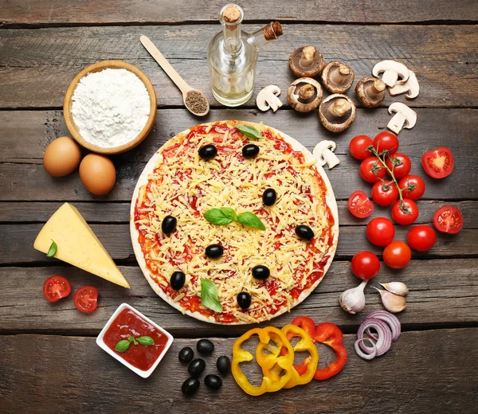

Sobre a Pizza da Casa
Localizada no no bairro Paulo de Biazi a Pizza da Casa traz para o mercado o que há de melhor em pizza e esfihas. Fundada em 2012, a pizza da Casa já é destaque na cidade e conquista novos clientes a cada dia.
Nossa missão é: "Encantar os clientes com nossa pizza de qualidade e tradição".
Oferecemos tradição com forno a lenha e temperos de alta qualidade. O atendimento possui padrão de excelência e agilidade, garantindo a satisfação dos nossos clientes.
Benefícios
- Atendimento aos Clientes
- Espaço diferenciado
- Localização
- Forno à lenha